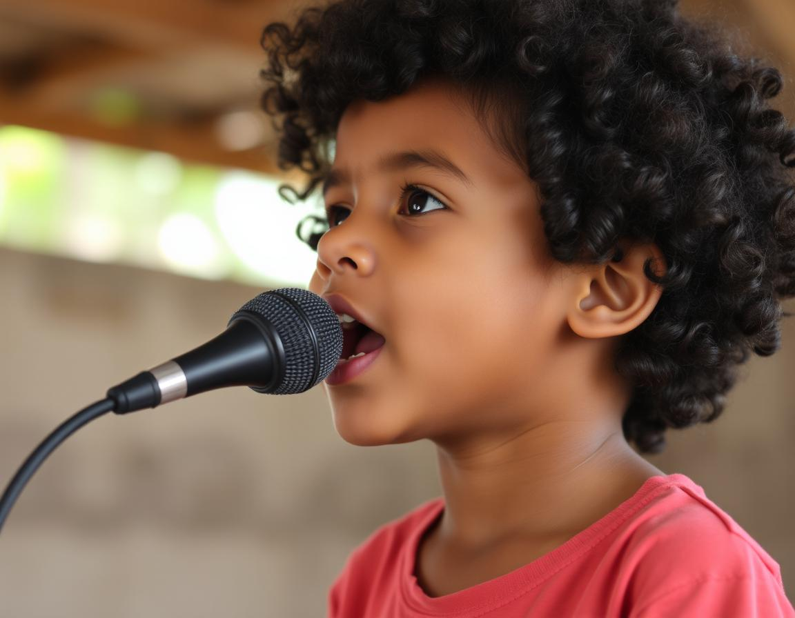
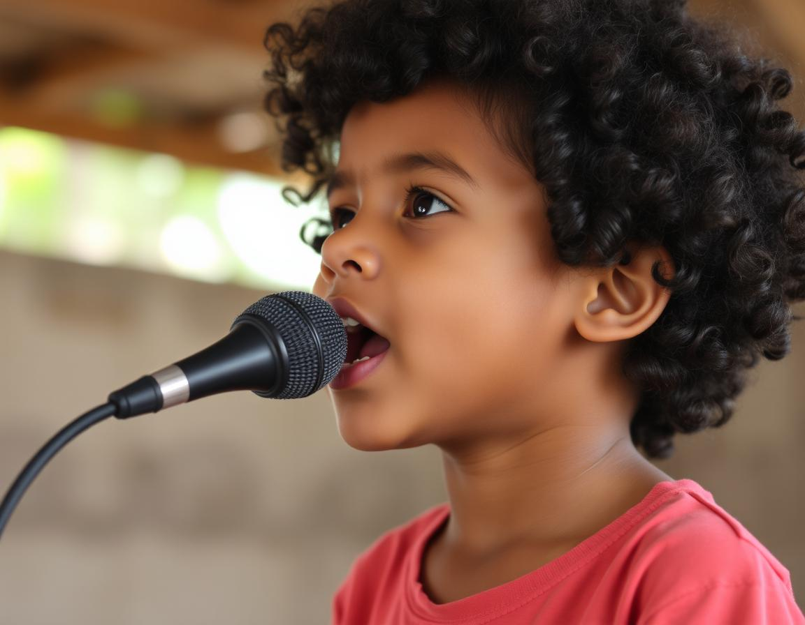

João João e Luizmuel se conheceram ainda na infância, na pequena cidade de Paranavaí, onde ambos cresceram. Desde cedo, a paixão pela música foi o elo que uniu esses dois jovens talentosos. Com apenas 8 anos, João João já arranhava os primeiros acordes no violão, enquanto Luizmuel encantava a todos com sua voz única, que desde cedo já mostrava um potencial incrível.
Na adolescência, a amizade entre João João e Luizmuel se consolidou, e os dois começaram a tocar juntos regularmente. Influenciados por grandes nomes da música sertaneja como Zezé Di Camargo & Luciano e Chitãozinho & Xororó, decidiram formar uma dupla. Inicialmente, tocavam em bares e festas locais, sempre com uma recepção calorosa do público. A combinação da técnica refinada de João João no violão e a voz carismática de Luizmuel os diferenciava dos outros músicos da região.
Foi nessa época que o nome "Barões da Dopamina" surgiu. A escolha do nome foi um reflexo do impacto que a música causava em seus ouvintes, trazendo alegria e emoções intensas, como uma verdadeira injeção de dopamina. O nome também brinca com a ideia da busca incessante por felicidade e bem-estar, algo que as músicas da dupla transmitiam.
Aos 18 anos, os Barões da Dopamina começaram a gravar suas primeiras canções em um pequeno estúdio local. Sem muitos recursos, mas com muita criatividade, compuseram músicas que falavam do dia a dia do trabalhador brasileiro, das alegrias e dificuldades da vida no campo e do amor verdadeiro. O primeiro sucesso veio com a música "Coração de Pedra", que rapidamente se espalhou pelas rádios do interior.
Com o tempo, a dupla começou a atrair a atenção de produtores musicais de São Paulo, e logo assinaram seu primeiro contrato com uma grande gravadora. A partir daí, o sucesso foi meteórico. Músicas como "Chama no Forró" e "Vida de Peão" se tornaram hinos populares, e os Barões da Dopamina passaram a lotar shows por todo o Brasil.
Hoje, com mais de 25 anos de idade, João João e Luizmuel são considerados dois dos maiores nomes do sertanejo contemporâneo. Conhecidos por sua autenticidade e por nunca perderem a conexão com suas raízes, os Barões da Dopamina continuam a conquistar novas gerações de fãs. Suas letras, que misturam humor, romance e a realidade do cotidiano brasileiro, ressoam com públicos de todas as idades.
Além do sucesso musical, a dupla também se envolveu em projetos sociais, utilizando sua influência para apoiar a educação musical em comunidades carentes. Eles acreditam que a música pode mudar vidas, assim como mudou a deles, e dedicam parte de seu tempo e recursos para garantir que mais jovens tenham a oportunidade de descobrir seus talentos.
Ao longo de sua carreira, os Barões da Dopamina ganharam diversos prêmios, incluindo Melhor Dupla Sertaneja e Canção do Ano em premiações nacionais. Seu álbum "Raízes e Sonhos" foi certificado como disco de platina, e eles se tornaram presença constante nos principais festivais de música do país.
Mesmo após conquistar tanto sucesso, João João e Luizmuel continuam com a mesma paixão pela música que tinham quando começaram. Estão sempre experimentando novos sons e estilos, e já anunciaram que estão trabalhando em um novo álbum que promete inovar mais uma vez o cenário sertanejo.